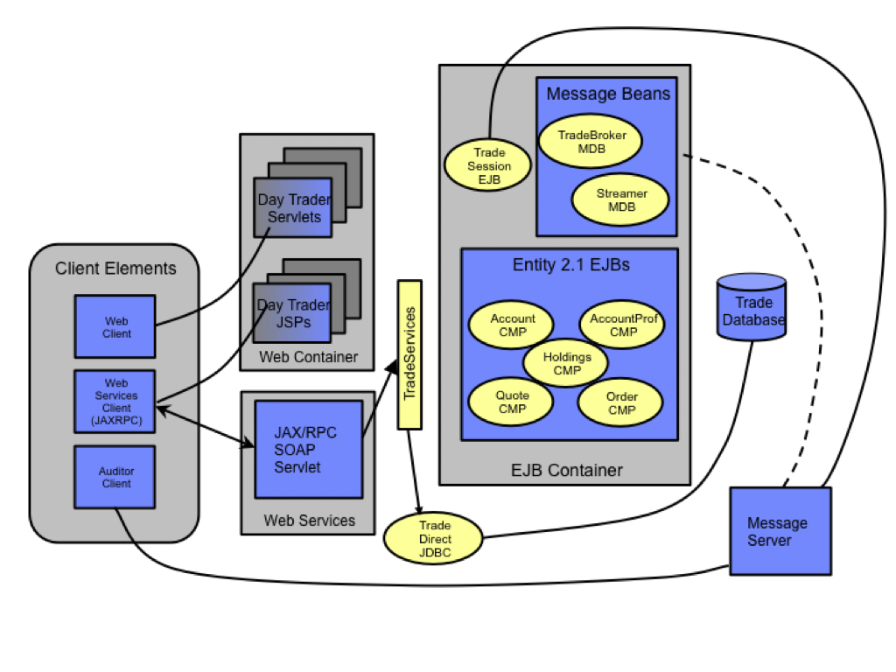

|
Overview
The Apache AriesTM
performance benchmark sample provides a suite of Apache developed
workloads for characterizing performance of an Aries enabled Java EE
Application Server. The workloads consist of an end to end web
application and a set of primitives. The applications are a
collection of Java classes, Java Servlets, Java Server Pages, and blueprint
beans built to open OSGi and Java EE APIs. Together
these provide versatile and portable test cases designed to measure
aspects of scalability and performance.

AriesTrader Java EE Components
Model-View-Controller Architecture
AriesTrader
AriesTrader is the Aries end-to-end benchmark and performance sample
application. The new AriesTrader benchmark has been re-designed and
developed to cover the application-focused specifications defined by the OSGi Alliance
Enterprise Expert Group (EEG) as implemented and extended in Apache Aries.
This provides a real world workload driving an Aries's
implementation of Aries enabled application servers.
AriesTrader's new design leverages the OSGi programming model for Java EE applications.
Primitives
The Primitives provide a set of workloads to
individually test various components of an Aries enabled Application
Server. The primitives leverage portions of the AriesTrader application
infrastructure to test specific Java EE components such as the
servlet engine, JSP support, and more.
Additional overview
information is included in the FAQ
|